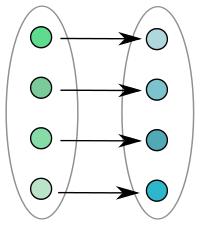
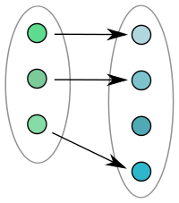
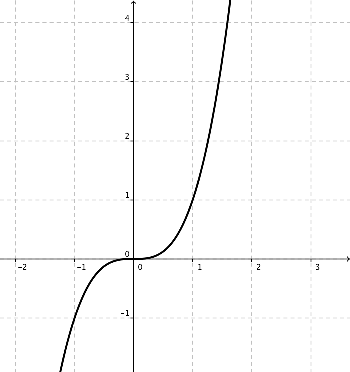

Extra: 10. Relationer
Vi kan även se funktioner som något abstraktare än vad vi gjorde i de två senaste kapitlen.
Tänk dig en grupp personer går förbi en person. Den stillastående personen delar in gruppen i kvinnor och män. Här fungerar personen som delar in gruppen som en funktion.
I exemplet ovan är hela gruppen definitionsmängden. Värdemängden består av två kategorier, kvinnor och män.
Matematiskt beskriver vi det som nedan.

Om du känner för att läsa mera om funktioner är artikeln på Wikipedia riktigt bra.
I matematiken talar vi om att olika funktioner har olika egenskaper. Vi talar om injektivitet, surjektivitet och bijektivitet. Vi kallar nedan definitionsmängden för \(X\) och värdemängden för \(Y\).
Injektivitet
En injektiv funktion är en funktion där varje element i definitionsmängden får ett unikt par i värdemängden.
|  |  |  |
| Injektiv | Inte injektiv | Injektiv |
Matematiskt skriver vi det som \[\forall x_1,x_2 \in X, \quad f(x_1) = f(x_2) \Rightarrow x_1=x_2.\]
Surjektivitet
En surjektiv funktion är en funktion där alla element i värdemängden används.
| ||
| Surjektiv | Surjektiv | Inte surjektiv |
Matematiskt skriver vi det som \[\forall y \in Y, \exists x \in X, \quad f(x)=y.\]
Bijektivitet
Om en funktion är injektiv och surjektiv säger vi att den är bijektiv. Bijektiva funktioner har inversa funktioner, mera om detta kommer i senare kurser. Inversa funktioner och inversa tal har samma egenskaper.
| ||
| Bijektiv | Inte bijektiv | Inte bijektiv |
Uppgifter
Kombinera så att det blir rätt.
Välj bland följande påståenden:
BijektivitetInjektivitetSurjektivitetKorrekt svar Varje element i definitionsmängden får ett eget par i värdemängden. Alla element i värdemängden används. Alla element i definitionsmängden och värdemängden används och de bildar unika par. Korrekt svar Injektivitet Varje element i definitionsmängden får ett eget par i värdemängden. Surjektivitet Alla element i värdemängden används. Bijektivitet Alla element i definitionsmängden och värdemängden används och de bildar unika par. - Beskriver grafen en funktion? Om ja, är funktionen injektiv, surjektiv eller bijektiv?
Påstående Injektiv Surjektiv Bijektiv Inte injektiv eller surjektiv Ingen funktion 
 


Påstående Injektiv Surjektiv Bijektiv Inte injektiv eller surjektiv Ingen funktion